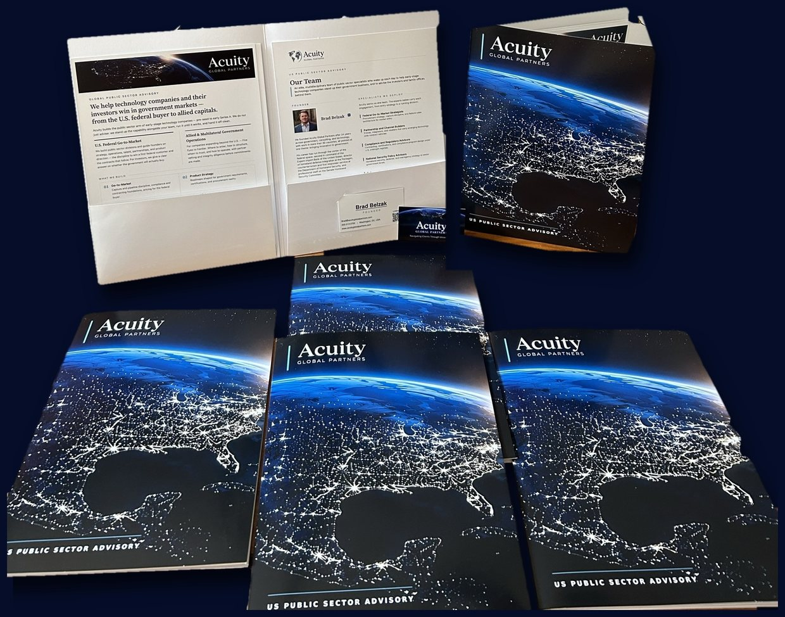

US Public Sector Advisory
Government developments that could affect how technology companies enter, compete, and win in the federal market.
Turn government developments into a federal market plan.
Discuss Your Federal StrategyExpertise
Washington, DC
We help pre-seed to Series A startups win their first government customers and build the company to support them.
“Our product has obvious government application but we do not know how to get in front of the right people.”
“We have early government conversations but nothing converts to pilots or contracts.”
“We have no compliance, contracting, or back-office infrastructure for federal work.”
“We need government-ready collateral, pricing, and a partnership strategy before our next raise.”
We stand up the public sector division inside a young company and run it alongside the founders until it wins on its own.
Pre-seed to Series A founders with government-applicable products, venture-backed teams making their first federal hires, investors preparing portfolio companies for public-sector revenue, and high-net-worth individuals and family offices whose capital and ventures intersect the public sector.
What We Build
Everything a startup needs to win government business, built in this order and handed over running. Engage us for the full build or the one piece you are missing.
00
Founders want the division overnight. We build it in sprints, in this order.
01
Who buys, how they buy, and what has to be true first.
02
What you built, made buyable by a government customer.
03
Most federal revenue reaches a startup through somebody else’s contract.
04
A division is people. We put the right ones in seat.
05
The campaign that turns one contract into a market.
All five
A public sector division that runs without us.
Tap or hover a phase to hold it. Drag the line to move through the build.
01
Strategy grounded in how agencies actually buy: capture and pipeline discipline, compliance and contracting foundations, back-office setup, and pricing for the federal buyer.
02
Roadmaps shaped for government requirements, certifications, and procurement reality, so the product is buyable when the opening comes.
03
Primes, integrators, and channel; the teaming that gets early-stage technology onto contract vehicles without giving away the deal.
04
The operators who run public sector, including cleared talent; sourced, vetted, and accountable.
05
The national or international campaign that follows a first contract, created and executed with the client: the agencies, primes, and allied buyers to engage and in what sequence, introductions to technology business incubators and accelerators, and representation as brand ambassador at conferences, meetings, and industry events. The goal is a repeatable public sector business.
Take all five, or the one or two pieces you are missing. Any set is scoped and priced as a single engagement.
Worldwide
Five Eyes to frontier — for companies and investors expanding beyond the U.S. into allied, emerging, and contested markets.
“We are moving into allied and emerging markets, and we cannot tell which local partners we can actually trust.”
“We found a local partner who looks perfect. That is exactly what worries me.”
“We are operating where the rules change overnight, and we need to keep running when they do.”
“We are weighing a presence in a fragile market and need an honest read, not a sales pitch.”
We stand up and run government-facing operations beyond the U.S., from steady-state allied capitals to markets where the rules change overnight. The work runs in three stages.
1
AssessAn honest country-risk read, a decision on where to enter and how to structure, and partner vetting and integrity due diligence before any commitment is made.2
EnterGovernment-facing operations across Five Eyes allies, emerging markets in the Middle East, Southeast Asia, and Latin America, and the multilateral bodies that shape how allies buy.3
SustainResilience and continuity planning, crisis response, and the on-the-ground judgment to keep operating when conditions turn.Companies and investors expanding into allied, emerging, and contested markets; multinationals assessing country risk; organizations that must keep operating when conditions change; and family offices and principals safeguarding cross-border interests where government and geopolitics converge.
How We Deliver
Every engagement runs on the same operating discipline — senior-led, clearly scoped, and measured on delivery, whether we are winning a first federal contract or standing up operations in a hard market.
Phase 01
Inquire and Align
A confidential first conversation to understand the objective and the stakes.
Phase 02
Scope and Plan
We turn the objective into a concrete plan, timeline, and success measures.
Phase 03
Build and Execute
We do the work alongside your team — building, selling, standing up operations.
Phase 04
Operate and Sustain
We keep it running — and hand it off cleanly when the time is right.
Clients
From pre-seed startups selling into government for the first time to established scale-ups deepening an existing public-sector footprint. We help them reach the right buyers, build the capability to win, and stand up the compliance, contracting, and operations that government work demands — at home and abroad.
Venture and private-equity firms, and the boards of their portfolio companies, who need a clear-eyed read on government-facing opportunity and risk — from diligence on a target’s public-sector revenue and exposure to shaping a portfolio company’s federal and allied-market strategy.
Companies and multinationals moving into allied, emerging, and contested markets who need trusted local partners, honest country-risk assessment, and operations that keep running when conditions change — from Five Eyes capitals to frontier environments.
Principals and family offices whose capital, ventures, and interests intersect government — public-sector-facing investments, regulated industries, and cross-border holdings. We bring the same discretion, due diligence, and on-the-ground judgment we apply for governments to protect and advance private interests in complex, high-stakes markets.
Leadership
Acuity Global Partners is led by Brad Belzak, a senior executive and advisor with 24 years across government, defense, technology, consulting, finance, and global risk — supported by vetted specialists in law, tax, security, investigations, and local-market advisory.
His career has moved between public service and the private sector for two decades. He began at the Department of Homeland Security in its earliest days, holding progressive roles across intelligence, disaster response, and policy — FEMA during Hurricane Katrina, the FBI Terrorism Screening Center, and aviation security at TSA — and performed security counsel and investigations for a U.S. Senator on the U.S. Senate Homeland Security Committee in Congress. He then advised governments and multinationals through crisis and growth at Deloitte, Crumpton Group, and EY, from the 2011 Thai floods and post-conflict Libya to risk and investigations across Europe, the Middle East, and Southeast Asia.
He returned to government to direct homeland defense integration at the Pentagon, where he helped lead the U.S. response to the Chinese spy balloon incident, then served as second-in-command of the Export-Import Bank and helped build the public sector practice at Strider Technologies. He currently serves as a Commissioner on the Washington Metrorail Safety Commission, holds degrees from Northeastern and Elon, and is a Certified Fraud Examiner.
Our Team
Acuity works as one team. A multidisciplinary bench of public sector specialists carries each engagement, from entry strategy to a running division.
Procurement strategy, capture discipline, and federal sales architecture for market entry.
Primes, integrators, and resellers that carry emerging technology onto contract vehicles.
Contracting, certifications, and compliance program design under U.S. oversight regimes.
Homeland security, defense, and interagency strategy at senior government levels.
Policy design, legislative strategy, and program navigation across federal environments.
Sourcing the operators who run and grow federal businesses.
Investigative screening of partners, investments, and key hires.
Contact
We handle every inquiry with the utmost discretion and confidentiality.
Please reach out to Brad@acuityglobalpartners.com or use the form below.
